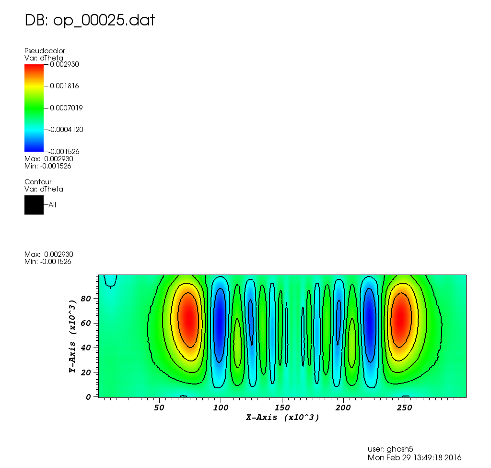

Location: hypar/Examples/2D/NavierStokes2D/InertiaGravityWave (This directory contains all the input files needed to run this case. If there is a Run.m, run it in MATLAB to quickly set up, run, and visualize the example).
Governing equations: 2D Euler Equations (navierstokes2d.h - By default, NavierStokes2D::Re is set to -1 which makes the code skip the parabolic terms, i.e., the 2D Euler equations are solved.)
Reference:
- W. C. Skamarock and J. B. Klemp, "Efficiency and accuracy of
the Klemp-Wilhelmson timesplitting technique", Monthly Weather Review, 122 (1994), pp. 2623–2630.
- Giraldo, F.X., Restelli, M., "A study of spectral element and discontinuous Galerkin methods for the Navier–Stokes equations in nonhydrostatic mesoscale atmospheric modeling: Equation sets and test cases", J. Comput. Phys., 227, 2008, 3849–3877, (Section 3.1).
Domain: \(0 \le x \le 300,000\,m, 0 \le y \le 10,000\,m\), "periodic" (_PERIODIC_) boundary conditions along \(x\), "slip-wall" (_SLIP_WALL_) boundary conditions along \(y\).
Initial solution: See references above.
Numerical method:
Input files required:
solver.inp
begin
ndims 2
nvars 4
size 1200 50
iproc 12 1
ghost 3
n_iter 6000
restart_iter 0
time_scheme rk
time_scheme_type ssprk3
hyp_space_scheme weno5
hyp_flux_split no
hyp_interp_type components
par_space_type nonconservative-2stage
par_space_scheme 4
dt 0.5
conservation_check no
screen_op_iter 40
file_op_iter 240
input_mode serial
ip_file_type binary
output_mode serial
op_file_format binary
op_overwrite no
model navierstokes2d
end
boundary.inp
4
periodic 0 1 0 0 0.0 10000.0
periodic 0 -1 0 0 0.0 10000.0
slip-wall 1 1 0.0 300000.0 0.0 0.0
0.0 0.0
slip-wall 1 -1 0.0 300000.0 0.0 0.0
0.0 0.0
physics.inp
begin
gamma 1.4
upwinding rusanov
gravity 0.0 9.8
rho_ref 1.1612055171196529
p_ref 100000.0
HB 3 0.01
R 287.058
end
weno.inp (optional)
begin
mapped 0
borges 0
yc 0
no_limiting 1
epsilon 0.000001
p 2.0
rc 0.3
xi 0.001
end
Note: no_limiting is set to 1, i.e., since this is a smooth problem, WENO limiting is turned off, and the spatial discretization uses a 5th order polynomial.
To generate initial.inp (initial solution), compile and run the following code in the run directory.
#include <stdio.h>
#include <stdlib.h>
#include <math.h>
#include <string.h>
{
return(exp(a*log(x)));
}
{
double gamma = 1.4;
double R = 287.058;
double rho_ref = 1.1612055171196529;
double p_ref = 100000.0;
double grav_x = 0.0;
double grav_y = 9.8;
int HB = 0;
double BV = 0.0;
int NI,NK,ndims;
char ip_file_type[50];
strcpy(ip_file_type,"ascii");
FILE *in;
printf("Reading file \"solver.inp\"...\n");
in = fopen("solver.inp","r");
if (!in) {
printf ("Error: Input file \"solver.inp\" not found.\n");
return(1);
} else {
char word[500];
fscanf(in,"%s",word);
if (!strcmp(word, "begin")){
while (strcmp(word, "end")){
fscanf(in,"%s",word);
if (!strcmp(word, "ndims")) fscanf(in,"%d",&ndims);
else if (!strcmp(word, "size")) {
fscanf(in,"%d",&NI);
fscanf(in,"%d",&NK);
} else if (!strcmp(word, "ip_file_type")) fscanf(in,"%s",ip_file_type);
}
} else printf("Error: Illegal format in solver.inp. Crash and burn!\n");
}
fclose(in);
printf("Reading file \"physics.inp\"...\n");
in = fopen("physics.inp","r");
if (!in) {
printf("Error: Input file \"physics.inp\" not found.\n");
return(0);
} else {
char word[500];
fscanf(in,"%s",word);
if (!strcmp(word, "begin")) {
while (strcmp(word, "end")) {
fscanf(in,"%s",word);
if (!strcmp(word, "rho_ref")) fscanf(in,"%lf",&rho_ref);
else if (!strcmp(word, "p_ref" )) fscanf(in,"%lf",&p_ref );
else if (!strcmp(word, "gamma" )) fscanf(in,"%lf",&gamma );
else if (!strcmp(word, "R" )) fscanf(in,"%lf",&R );
else if (!strcmp(word, "HB" )) {
fscanf(in,"%d" ,&HB );
if (HB == 3) fscanf(in, "%lf", &BV);
} else if (!strcmp(word, "gravity")) {
fscanf(in,"%lf",&grav_x );
fscanf(in,"%lf",&grav_y );
}
}
} else printf("Error: Illegal format in physics.inp. Crash and burn!\n");
}
fclose(in);
if (ndims != 2) {
printf("ndims is not 2 in solver.inp. this code is to generate 2D initial conditions\n");
return(0);
}
if (HB != 3) {
printf("Error: Specify \"HB\" as 3 in physics.inp.\n");
}
if (grav_x != 0.0) {
printf("Error: Gravity force along x must be zero for HB = 3.\n");
return(0);
}
printf("Grid:\t\t\t%d X %d\n",NI,NK);
printf("Reference density and pressure: %lf, %lf.\n",rho_ref,p_ref);
double xmin, xmax, zmin, zmax;
xmin = 0.0;
xmax = 300000;
zmin = 0.0;
zmax = 10000.0 ;
double Lx = xmax - xmin;
double Lz = zmax - zmin;
int i,k;
double dx = Lx / ((double)NI-1);
double dz = Lz / ((double)NK-1);
double *x, *z, *U;
FILE *out;
x = (double*) calloc (NI , sizeof(double));
z = (double*) calloc (NK , sizeof(double));
U = (double*) calloc (4*NI*NK, sizeof(double));
double inv_gamma_m1 = 1.0 / (gamma-1.0);
double Cp = gamma * R * inv_gamma_m1;
double Cv = R * inv_gamma_m1;
double T_ref = p_ref / (R*rho_ref);
double pi = 4.0*atan(1.0);
double tc = 0.01;
double hc = 10000;
double ac = 5000;
double xc = 100000;
double uc = 20.0;
for (i = 0; i < NI; i++){
for (k = 0; k < NK; k++){
x[i] = xmin + i*dx;
z[k] = zmin + k*dz;
int p = i + NI*k;
double dtheta = tc * sin(pi*z[k]/hc) / (1.0 + ((x[i]-xc)/ac)*((x[i]-xc)/ac));
double theta = T_ref*exp(BV*BV*z[k]/grav_y) + dtheta;
double Pexner = 1.0 + ((grav_y*grav_y)/(Cp*T_ref*BV*BV))*(exp(-BV*BV*z[k]/grav_y)-1.0);
double rho = (p_ref/(R*theta)) *
raiseto(Pexner,inv_gamma_m1);
double E = Cv * theta * Pexner + 0.5 * (uc * uc);
U[4*p+0] = rho;
U[4*p+1] = rho*uc;
U[4*p+2] = 0.0;
U[4*p+3] = rho*E;
}
}
if (!strcmp(ip_file_type,"ascii")) {
printf("ASCII not supported. Use binary format\n");
} else if ((!strcmp(ip_file_type,"binary")) || (!strcmp(ip_file_type,"bin"))) {
printf("Writing binary initial solution file initial.inp\n");
out = fopen("initial.inp","wb");
fwrite(x,sizeof(double),NI,out);
fwrite(z,sizeof(double),NK,out);
fwrite(U,sizeof(double),4*NI*NK,out);
fclose(out);
}
free(x);
free(z);
free(U);
return(0);
}
Output:
Note that iproc is set to
12 1
in solver.inp (i.e., 12 processors along x, and 1 processor along y). Thus, this example should be run with 12 MPI ranks (or change iproc).
After running the code, there should be 26 output files op_00000.bin, op_00001.bin, ... op_00025.bin; the first one is the solution at \(t=0s\) and the final one is the solution at \(t=3000s\). Since HyPar::op_overwrite is set to no in solver.inp, separate files are written for solutions at each output time.
HyPar::op_file_format is set to binary in solver.inp, and thus, all the files are written out in the binary format, see WriteBinary(). The binary file contains the conserved variables \(\left(\rho, \rho u, \rho v, e\right)\). The following code converts these variables to the primitive variables of interest to atmospheric flows \(\left(\rho, u, v, p, \theta\right)\). It also writes out the hydrostatically balanced quantities \(\left(\rho_0,\pi_0, \theta_0\right)\) for this case that can be used to compute and plot the temperature and density perturbations. These variables are then written to either a tecplot2d or text file. (compile and run it in the run directory):
#include <stdio.h>
#include <stdlib.h>
#include <string.h>
#include <math.h>
typedef struct _parameters_{
double g, R, gamma, P_ref, rho_ref, Nbv;
int HB;
} Parameters;
{
if (f[7] == '9') {
f[7] = '0';
if (f[6] == '9') {
f[6] = '0';
if (f[5] == '9') {
f[5] = '0';
if (f[4] == '9') {
f[4] = '0';
if (f[3] == '9') {
f[3] = '0';
fprintf(stderr,"Warning: file increment hit max limit. Resetting to zero.\n");
} else {
f[3]++;
}
} else {
f[4]++;
}
} else {
f[5]++;
}
} else {
f[6]++;
}
} else {
f[7]++;
}
}
{
return(exp(a*log(x)));
}
void WriteTecplot2D(
int nvars,
int imax,
int jmax,
double *x,
double *u,
char *f)
{
printf("\tWriting tecplot solution file %s.\n",f);
FILE *out;
out = fopen(f,"w");
if (!out) {
fprintf(stderr,"Error: could not open %s for writing.\n",f);
return;
}
double *X = x;
double *Y = x+imax;
fprintf(out,"VARIABLES=\"I\",\"J\",\"X\",\"Y\",");
fprintf(out,"\"RHO\",\"U\",\"V\",\"P\",");
fprintf(out,"\"THETA\",\"RHO0\",\"P0\",");
fprintf(out,"\"PI0\",\"THETA0\",\n");
fprintf(out,"ZONE I=%d,J=%d,F=POINT\n",imax,jmax);
int i,j;
for (j=0; j<jmax; j++) {
for (i=0; i<imax; i++) {
int v, p = i + imax*j;
fprintf(out,"%4d %4d ",i,j);
fprintf(out,"%1.16E %1.16E ",X[i],Y[j]);
for (v=0; v<nvars; v++) fprintf(out,"%1.16E ",u[nvars*p+v]);
fprintf(out,"\n");
}
}
fclose(out);
return;
}
void WriteText2D(int nvars,int imax, int jmax,double *x,double *u,char *f)
{
printf("\tWriting text solution file %s.\n",f);
FILE *out;
out = fopen(f,"w");
if (!out) {
fprintf(stderr,"Error: could not open %s for writing.\n",f);
return;
}
double *X = x;
double *Y = x+imax;
int i,j;
for (j=0; j<jmax; j++) {
for (i=0; i<imax; i++) {
int v, p = i + imax*j;
fprintf(out,"%4d %4d ",i,j);
fprintf(out,"%1.16E %1.16E ",X[i],Y[j]);
for (v=0; v<nvars; v++) fprintf(out,"%1.16E ",u[nvars*p+v]);
fprintf(out,"\n");
}
}
fclose(out);
return;
}
int PostProcess(char *fname, char *oname, void *p, int flag)
{
Parameters *params = (Parameters*) p;
FILE *in; in = fopen(fname,"rb");
if (!in) return(-1);
printf("Reading file %s.\n",fname);
int ndims, nvars;
double *U,*x;
fread(&ndims,sizeof(int),1,in);
fread(&nvars,sizeof(int),1,in);
if (ndims != 2) {
printf("Error: ndims in %s not equal to 2!\n",fname);
return(1);
}
if (nvars != 4) {
printf("Error: nvars in %s not equal to 4!\n",fname);
return(1);
}
int dims[ndims];
fread(dims,sizeof(int),ndims,in);
printf("Dimensions: %d x %d\n",dims[0],dims[1]);
printf("Nvars : %d\n",nvars);
x = (double*) calloc (dims[0]+dims[1] ,sizeof(double));
U = (double*) calloc (dims[0]*dims[1]*nvars ,sizeof(double));
fread(x,sizeof(double),dims[0]+dims[1] ,in);
fread(U,sizeof(double),dims[0]*dims[1]*nvars,in);
fclose(in);
int imax = dims[0];
int jmax = dims[1];
int evars = 5;
double *Q = (double*) calloc ((nvars+evars)*imax*jmax,sizeof(double));
int i, j;
double *X = x;
double *Y = x+imax;
double g = params->g;
double R = params->R;
double gamma = params->gamma;
double P_ref = params->P_ref;
double rho_ref = params->rho_ref;
double T_ref = P_ref / (R*rho_ref);
double inv_gamma_m1 = 1.0 / (gamma-1.0);
double Cp = gamma * inv_gamma_m1 * R;
double BV = params->Nbv;
for (i=0; i<imax; i++) {
for (j=0; j<jmax; j++) {
int p = i + imax*j;
double rho0, theta0, Pexner, P0;
Pexner = 1.0 + ((g*g)/(Cp*T_ref*BV*BV))*(exp(-BV*BV*Y[j]/g)-1.0);
theta0 = T_ref * exp(BV*BV*Y[j]/g);
P0 = P_ref *
raiseto(Pexner, gamma*inv_gamma_m1);
rho0 = rho_ref *
raiseto(Pexner, inv_gamma_m1 ) * exp(-BV*BV*Y[j]/g);
double rho, uvel, vvel, E, P, theta;
rho = U[nvars*p+0];
uvel = U[nvars*p+1] / rho;
vvel = U[nvars*p+2] / rho;
E = U[nvars*p+3];
P = (gamma-1.0) * (E - 0.5*rho*(uvel*uvel+vvel*vvel));
theta = (E-0.5*rho*(uvel*uvel+vvel*vvel))/(Pexner*rho) * ((gamma-1.0)/R);
Q[(nvars+evars)*p+0] = rho;
Q[(nvars+evars)*p+1] = uvel;
Q[(nvars+evars)*p+2] = vvel;
Q[(nvars+evars)*p+3] = P;
Q[(nvars+evars)*p+4] = theta;
Q[(nvars+evars)*p+5] = rho0;
Q[(nvars+evars)*p+6] = P0;
Q[(nvars+evars)*p+7] = Pexner;
Q[(nvars+evars)*p+8] = theta0;
}
}
else WriteText2D (nvars+evars,imax,jmax,x,Q,oname);
free(U);
free(Q);
free(x);
}
{
FILE *out1, *out2, *in, *inputs;
char filename[50], op_file_format[50], tecfile[50], overwrite[50];
int flag;
printf("Write tecplot file (1) or plain text file (0): ");
scanf("%d",&flag);
if ((flag != 1) && (flag != 0)) {
printf("Error: Invalid input. Should be 1 or 0.\n");
return(0);
}
printf("Reading solver.inp.\n");
inputs = fopen("solver.inp","r");
if (!inputs) {
fprintf(stderr,"Error: File \"solver.inp\" not found.\n");
return(1);
} else {
char word[100];
fscanf(inputs,"%s",word);
if (!strcmp(word, "begin")){
while (strcmp(word, "end")){
fscanf(inputs,"%s",word);
if (!strcmp(word, "op_file_format" )) fscanf(inputs,"%s" ,op_file_format);
else if (!strcmp(word, "op_overwrite" )) fscanf(inputs,"%s" ,overwrite );
}
}
fclose(inputs);
}
if (strcmp(op_file_format,"binary") && strcmp(op_file_format,"bin")) {
printf("Error: solution output needs to be in binary files.\n");
return(0);
}
Parameters params;
params.g = 9.8;
params.R = 287.058;
params.gamma = 1.4;
params.P_ref = 100000.0;
params.rho_ref = 100000.0 / (params.R * 300.0);
params.HB = 0;
params.Nbv = 0.0;
printf("Reading physics.inp.\n");
inputs = fopen("physics.inp","r");
if (!inputs) {
fprintf(stderr,"Error: File \"physics.inp\" not found.\n");
return(1);
} else {
char word[100];
fscanf(inputs,"%s",word);
if (!strcmp(word, "begin")){
while (strcmp(word, "end")){
fscanf(inputs,"%s",word);
if (!strcmp(word, "gamma")) fscanf(inputs,"%lf",¶ms.gamma);
else if (!strcmp(word, "gravity")) {
double crap; fscanf(inputs,"%lf",&crap);
fscanf(inputs,"%lf",¶ms.g);
} else if (!strcmp(word,"p_ref")) fscanf(inputs,"%lf",¶ms.P_ref);
else if (!strcmp(word,"rho_ref")) fscanf(inputs,"%lf",¶ms.rho_ref);
else if (!strcmp(word,"HB")) {
fscanf(inputs,"%d",¶ms.HB);
if (params.HB == 3) fscanf(inputs,"%lf",¶ms.Nbv);
}
}
}
fclose(inputs);
}
if (params.HB != 3) {
printf("Error: \"HB\" must be specified as 3 in physics.inp.\n");
return(0);
}
if (!strcmp(overwrite,"no")) {
strcpy(filename,"op_00000.bin");
while(1) {
strcpy(tecfile,filename);
tecfile[9] = 'd';
tecfile[10] = 'a';
tecfile[11] = 't';
int err = PostProcess(filename, tecfile, ¶ms, flag);
if (err == -1) {
printf("No more files found. Exiting.\n");
break;
}
}
} else if (!strcmp(overwrite,"yes")) {
strcpy(filename,"op.bin");
strcpy(tecfile,filename);
tecfile[3] = 'd';
tecfile[4] = 'a';
tecfile[5] = 't';
int err = PostProcess(filename, tecfile, ¶ms, flag);
if (err == -1) {
printf("Error: op.bin not found.\n");
return(0);
}
}
return(0);
}
The following plot shows the potential temperature perturbation contours at the final time t=3000. It was plotted using VisIt (https://wci.llnl.gov/simulation/computer-codes/visit/) with tecplot2d format chosen in the above postprocessing code.

If the postprocessing code above was used to write out files in text format, the following MATLAB script can be used to generate plots and visualize the solution:
% Script to plot the solution of the inertia-gravity wave
% problem.
% Compile and run aux/PostProcess.c after simulation is
% completed and choose text output.
clear all;
close all;
flag = 1;
if (exist('op.dat','file'))
flag = 0;
elseif (exist('op_00000.dat','file'))
flag = 1;
else
fprintf('Error: No solution files exist.\n');
return;
end
% get physical domain dimensions from any one solution file
if (flag)
data = load('op_00000.dat');
else
data = load('op.dat');
end
imax =
max(data(:,1)) + 1;
jmax =
max(data(:,2)) + 1;
xcoord = reshape(data(:,3),imax,jmax);
ycoord = reshape(data(:,4),imax,jmax);
xlen =
max(xcoord(:,1)) -
min(xcoord(:,1));
zlen =
max(ycoord(1,:)) -
min(ycoord(1,:));
% Get screen size
scrsz = get(0,'ScreenSize');
width =
max(scrsz(3),1000);
height = width *
max(10*zlen/xlen,0.1);
% open figure window
scrsz = get(0,'ScreenSize');
figSolution = figure('Position',[1 scrsz(4)/2 width height]);
figCrossSec = figure('Position',[1 scrsz(4)/2 width 0.67*width]);
maxfiles = 1000;
if (flag)
for n = 1:maxfiles
filename = ['op_',sprintf('%05d',n-1),'.dat'];
if (~exist(filename,'file'))
fprintf('No more files found.\n');
break;
end
fprintf('Plotting %s.\n',filename);
% read in the solution
data = load(filename);
rho = reshape(data(:, 5),imax,jmax);
uvel = reshape(data(:, 6),imax,jmax);
vvel = reshape(data(:, 7),imax,jmax);
P = reshape(data(:, 8),imax,jmax);
theta = reshape(data(:, 9),imax,jmax);
rho0 = reshape(data(:,10),imax,jmax);
P0 = reshape(data(:,11),imax,jmax);
Pexner = reshape(data(:,12),imax,jmax);
theta0 = reshape(data(:,13),imax,jmax);
% plot the solution
figure(figSolution);
handle = contourf(xcoord,ycoord,theta-theta0,'LineColor','none', ...
'LevelList',-0.0015:0.0005:0.003);
colorbar;
xlabel('x','FontName','Times','FontSize',20,'FontWeight','normal');
ylabel('y','FontName','Times','FontSize',20,'FontWeight','normal');
set(gca,'FontSize',14,'FontName','Times');
% plot the cross section
figure(figCrossSec);
plot(xcoord(:,1),(theta(:,jmax/2)-theta0(:,jmax/2)),'-ko','LineWidth',2, ...
'MarkerSize',10);
xlabel('x','FontName','Times','FontSize',20,'FontWeight','normal');
ylabel('\Delta\theta','FontName','Times','FontSize',20,'FontWeight','normal');
set(gca,'FontSize',14,'FontName','Times');
axis([0 300000 0 0.003]);
% write plot to files
print(figSolution,'-depsc',['Contour_',sprintf('%05d',n-1),'.eps']);
print(figCrossSec,'-depsc',['CrossSc_',sprintf('%05d',n-1),'.eps']);
end
else
filename = 'op.dat';
if (~exist(filename,'file'))
break;
end
fprintf('Plotting %s.\n',filename);
% read in the solution
data = load(filename);
rho = reshape(data(:, 5),imax,jmax);
uvel = reshape(data(:, 6),imax,jmax);
vvel = reshape(data(:, 7),imax,jmax);
P = reshape(data(:, 8),imax,jmax);
theta = reshape(data(:, 9),imax,jmax);
rho0 = reshape(data(:,10),imax,jmax);
P0 = reshape(data(:,11),imax,jmax);
Pexner = reshape(data(:,12),imax,jmax);
theta0 = reshape(data(:,13),imax,jmax);
% plot the solution
figure(figSolution);
handle = contourf(xcoord,ycoord,theta-theta0,'LineColor','none', ...
'LevelList',-0.0015:0.0005:0.003);
colorbar;
xlabel('x','FontName','Times','FontSize',20,'FontWeight','normal');
ylabel('y','FontName','Times','FontSize',20,'FontWeight','normal');
set(gca,'FontSize',14,'FontName','Times');
% plot the cross section
figure(figCrossSec);
plot(xcoord(:,1),(theta(:,jmax/2)-theta0(:,jmax/2)),'-k.','LineWidth',2, ...
'MarkerSize',10);
xlabel('x','FontName','Times','FontSize',20,'FontWeight','normal');
ylabel('\Delta\theta','FontName','Times','FontSize',20,'FontWeight','normal');
set(gca,'FontSize',14,'FontName','Times');
axis([0 300000 -0.002 0.003]);
grid on;
% write plot to files
print(figSolution,'-depsc',['Contour.eps']);
print(figCrossSec,'-depsc',['CrossSc.eps']);
end
Expected screen output:
HyPar - Parallel (MPI) version with 12 processes
Reading solver inputs from file "solver.inp".
No. of dimensions : 2
No. of variables : 4
Domain size : 1200 50
Processes along each dimension : 12 1
No. of ghosts pts : 3
No. of iter. : 6000
Restart iteration : 0
Time integration scheme : rk (ssprk3)
Spatial discretization scheme (hyperbolic) : weno5
Split hyperbolic flux term? : no
Interpolation type for hyperbolic term : components
Spatial discretization type (parabolic ) : nonconservative-2stage
Spatial discretization scheme (parabolic ) : 4
Time Step : 5.000000E-01
Check for conservation : no
Screen output iterations : 40
File output iterations : 240
Initial solution file type : binary
Initial solution read mode : serial
Solution file write mode : serial
Solution file format : binary
Overwrite solution file : no
Physical model : navierstokes2d
Partitioning domain.
Allocating data arrays.
Reading array from binary file initial.inp (Serial mode).
Volume integral of the initial solution:
0: 2.2722878895077519E+09
1: 4.5445757790155090E+10
2: 0.0000000000000000E+00
3: 4.4309563899845662E+14
Reading boundary conditions from "boundary.inp".
Boundary periodic: Along dimension 0 and face +1
Boundary periodic: Along dimension 0 and face -1
Boundary slip-wall: Along dimension 1 and face +1
Boundary slip-wall: Along dimension 1 and face -1
4 boundary condition(s) read.
Initializing solvers.
Reading WENO parameters from weno.inp.
Initializing physics. Model = "navierstokes2d"
Reading physical model inputs from file "physics.inp".
Setting up time integration.
Solving in time (from 0 to 6000 iterations)
Writing solution file op_00000.bin.
Iteration: 40 Time: 2.000E+01 Max CFL: 8.507E-01 Max Diff. No.: -1.000E+00 Norm: 8.0492E-03
Iteration: 80 Time: 4.000E+01 Max CFL: 8.507E-01 Max Diff. No.: -1.000E+00 Norm: 8.0930E-03
Iteration: 120 Time: 6.000E+01 Max CFL: 8.507E-01 Max Diff. No.: -1.000E+00 Norm: 3.4991E-03
Iteration: 160 Time: 8.000E+01 Max CFL: 8.507E-01 Max Diff. No.: -1.000E+00 Norm: 8.1797E-03
Iteration: 200 Time: 1.000E+02 Max CFL: 8.507E-01 Max Diff. No.: -1.000E+00 Norm: 7.4168E-03
Iteration: 240 Time: 1.200E+02 Max CFL: 8.507E-01 Max Diff. No.: -1.000E+00 Norm: 4.5509E-03
Writing solution file op_00001.bin.
Iteration: 280 Time: 1.400E+02 Max CFL: 8.507E-01 Max Diff. No.: -1.000E+00 Norm: 8.4985E-03
Iteration: 320 Time: 1.600E+02 Max CFL: 8.507E-01 Max Diff. No.: -1.000E+00 Norm: 6.8418E-03
Iteration: 360 Time: 1.800E+02 Max CFL: 8.507E-01 Max Diff. No.: -1.000E+00 Norm: 5.3790E-03
Iteration: 400 Time: 2.000E+02 Max CFL: 8.507E-01 Max Diff. No.: -1.000E+00 Norm: 8.7174E-03
Iteration: 440 Time: 2.200E+02 Max CFL: 8.507E-01 Max Diff. No.: -1.000E+00 Norm: 6.3556E-03
Iteration: 480 Time: 2.400E+02 Max CFL: 8.507E-01 Max Diff. No.: -1.000E+00 Norm: 6.0681E-03
Writing solution file op_00002.bin.
Iteration: 520 Time: 2.600E+02 Max CFL: 8.507E-01 Max Diff. No.: -1.000E+00 Norm: 8.7763E-03
Iteration: 560 Time: 2.800E+02 Max CFL: 8.507E-01 Max Diff. No.: -1.000E+00 Norm: 5.9905E-03
Iteration: 600 Time: 3.000E+02 Max CFL: 8.507E-01 Max Diff. No.: -1.000E+00 Norm: 6.6221E-03
Iteration: 640 Time: 3.200E+02 Max CFL: 8.507E-01 Max Diff. No.: -1.000E+00 Norm: 8.6419E-03
Iteration: 680 Time: 3.400E+02 Max CFL: 8.507E-01 Max Diff. No.: -1.000E+00 Norm: 5.7744E-03
Iteration: 720 Time: 3.600E+02 Max CFL: 8.507E-01 Max Diff. No.: -1.000E+00 Norm: 7.0585E-03
Writing solution file op_00003.bin.
Iteration: 760 Time: 3.800E+02 Max CFL: 8.507E-01 Max Diff. No.: -1.000E+00 Norm: 8.3068E-03
Iteration: 800 Time: 4.000E+02 Max CFL: 8.507E-01 Max Diff. No.: -1.000E+00 Norm: 5.7069E-03
Iteration: 840 Time: 4.200E+02 Max CFL: 8.507E-01 Max Diff. No.: -1.000E+00 Norm: 7.4018E-03
Iteration: 880 Time: 4.400E+02 Max CFL: 8.507E-01 Max Diff. No.: -1.000E+00 Norm: 7.8105E-03
Iteration: 920 Time: 4.600E+02 Max CFL: 8.507E-01 Max Diff. No.: -1.000E+00 Norm: 5.7679E-03
Iteration: 960 Time: 4.800E+02 Max CFL: 8.507E-01 Max Diff. No.: -1.000E+00 Norm: 7.6621E-03
Writing solution file op_00004.bin.
Iteration: 1000 Time: 5.000E+02 Max CFL: 8.507E-01 Max Diff. No.: -1.000E+00 Norm: 7.2269E-03
Iteration: 1040 Time: 5.200E+02 Max CFL: 8.507E-01 Max Diff. No.: -1.000E+00 Norm: 5.9413E-03
Iteration: 1080 Time: 5.400E+02 Max CFL: 8.507E-01 Max Diff. No.: -1.000E+00 Norm: 7.8331E-03
Iteration: 1120 Time: 5.600E+02 Max CFL: 8.507E-01 Max Diff. No.: -1.000E+00 Norm: 6.7049E-03
Iteration: 1160 Time: 5.800E+02 Max CFL: 8.507E-01 Max Diff. No.: -1.000E+00 Norm: 6.2985E-03
Iteration: 1200 Time: 6.000E+02 Max CFL: 8.507E-01 Max Diff. No.: -1.000E+00 Norm: 7.9478E-03
Writing solution file op_00005.bin.
Iteration: 1240 Time: 6.200E+02 Max CFL: 8.507E-01 Max Diff. No.: -1.000E+00 Norm: 6.3055E-03
Iteration: 1280 Time: 6.400E+02 Max CFL: 8.507E-01 Max Diff. No.: -1.000E+00 Norm: 6.7137E-03
Iteration: 1320 Time: 6.600E+02 Max CFL: 8.507E-01 Max Diff. No.: -1.000E+00 Norm: 7.9739E-03
Iteration: 1360 Time: 6.800E+02 Max CFL: 8.507E-01 Max Diff. No.: -1.000E+00 Norm: 5.8813E-03
Iteration: 1400 Time: 7.000E+02 Max CFL: 8.507E-01 Max Diff. No.: -1.000E+00 Norm: 7.0079E-03
Iteration: 1440 Time: 7.200E+02 Max CFL: 8.507E-01 Max Diff. No.: -1.000E+00 Norm: 7.6260E-03
Writing solution file op_00006.bin.
Iteration: 1480 Time: 7.400E+02 Max CFL: 8.507E-01 Max Diff. No.: -1.000E+00 Norm: 5.6920E-03
Iteration: 1520 Time: 7.600E+02 Max CFL: 8.507E-01 Max Diff. No.: -1.000E+00 Norm: 7.6613E-03
Iteration: 1560 Time: 7.800E+02 Max CFL: 8.507E-01 Max Diff. No.: -1.000E+00 Norm: 7.7596E-03
Iteration: 1600 Time: 8.000E+02 Max CFL: 8.507E-01 Max Diff. No.: -1.000E+00 Norm: 5.7542E-03
Iteration: 1640 Time: 8.200E+02 Max CFL: 8.507E-01 Max Diff. No.: -1.000E+00 Norm: 7.6336E-03
Iteration: 1680 Time: 8.400E+02 Max CFL: 8.507E-01 Max Diff. No.: -1.000E+00 Norm: 7.3057E-03
Writing solution file op_00007.bin.
Iteration: 1720 Time: 8.600E+02 Max CFL: 8.507E-01 Max Diff. No.: -1.000E+00 Norm: 6.2239E-03
Iteration: 1760 Time: 8.800E+02 Max CFL: 8.507E-01 Max Diff. No.: -1.000E+00 Norm: 8.1612E-03
Iteration: 1800 Time: 9.000E+02 Max CFL: 8.507E-01 Max Diff. No.: -1.000E+00 Norm: 6.8415E-03
Iteration: 1840 Time: 9.200E+02 Max CFL: 8.507E-01 Max Diff. No.: -1.000E+00 Norm: 5.9011E-03
Iteration: 1880 Time: 9.400E+02 Max CFL: 8.507E-01 Max Diff. No.: -1.000E+00 Norm: 8.2880E-03
Iteration: 1920 Time: 9.600E+02 Max CFL: 8.507E-01 Max Diff. No.: -1.000E+00 Norm: 7.0046E-03
Writing solution file op_00008.bin.
Iteration: 1960 Time: 9.800E+02 Max CFL: 8.507E-01 Max Diff. No.: -1.000E+00 Norm: 6.0716E-03
Iteration: 2000 Time: 1.000E+03 Max CFL: 8.507E-01 Max Diff. No.: -1.000E+00 Norm: 7.8161E-03
Iteration: 2040 Time: 1.020E+03 Max CFL: 8.507E-01 Max Diff. No.: -1.000E+00 Norm: 6.9994E-03
Iteration: 2080 Time: 1.040E+03 Max CFL: 8.507E-01 Max Diff. No.: -1.000E+00 Norm: 6.8182E-03
Iteration: 2120 Time: 1.060E+03 Max CFL: 8.507E-01 Max Diff. No.: -1.000E+00 Norm: 7.2835E-03
Iteration: 2160 Time: 1.080E+03 Max CFL: 8.507E-01 Max Diff. No.: -1.000E+00 Norm: 6.5020E-03
Writing solution file op_00009.bin.
Iteration: 2200 Time: 1.100E+03 Max CFL: 8.507E-01 Max Diff. No.: -1.000E+00 Norm: 7.5126E-03
Iteration: 2240 Time: 1.120E+03 Max CFL: 8.507E-01 Max Diff. No.: -1.000E+00 Norm: 7.0553E-03
Iteration: 2280 Time: 1.140E+03 Max CFL: 8.507E-01 Max Diff. No.: -1.000E+00 Norm: 5.8663E-03
Iteration: 2320 Time: 1.160E+03 Max CFL: 8.507E-01 Max Diff. No.: -1.000E+00 Norm: 7.8308E-03
Iteration: 2360 Time: 1.180E+03 Max CFL: 8.507E-01 Max Diff. No.: -1.000E+00 Norm: 7.0075E-03
Iteration: 2400 Time: 1.200E+03 Max CFL: 8.507E-01 Max Diff. No.: -1.000E+00 Norm: 5.5326E-03
Writing solution file op_00010.bin.
Iteration: 2440 Time: 1.220E+03 Max CFL: 8.507E-01 Max Diff. No.: -1.000E+00 Norm: 7.8712E-03
Iteration: 2480 Time: 1.240E+03 Max CFL: 8.507E-01 Max Diff. No.: -1.000E+00 Norm: 7.0134E-03
Iteration: 2520 Time: 1.260E+03 Max CFL: 8.507E-01 Max Diff. No.: -1.000E+00 Norm: 5.7395E-03
Iteration: 2560 Time: 1.280E+03 Max CFL: 8.507E-01 Max Diff. No.: -1.000E+00 Norm: 7.8065E-03
Iteration: 2600 Time: 1.300E+03 Max CFL: 8.507E-01 Max Diff. No.: -1.000E+00 Norm: 6.9950E-03
Iteration: 2640 Time: 1.320E+03 Max CFL: 8.507E-01 Max Diff. No.: -1.000E+00 Norm: 6.3216E-03
Writing solution file op_00011.bin.
Iteration: 2680 Time: 1.340E+03 Max CFL: 8.507E-01 Max Diff. No.: -1.000E+00 Norm: 7.7634E-03
Iteration: 2720 Time: 1.360E+03 Max CFL: 8.507E-01 Max Diff. No.: -1.000E+00 Norm: 6.9083E-03
Iteration: 2760 Time: 1.380E+03 Max CFL: 8.507E-01 Max Diff. No.: -1.000E+00 Norm: 6.7745E-03
Iteration: 2800 Time: 1.400E+03 Max CFL: 8.507E-01 Max Diff. No.: -1.000E+00 Norm: 7.3969E-03
Iteration: 2840 Time: 1.420E+03 Max CFL: 8.507E-01 Max Diff. No.: -1.000E+00 Norm: 6.6665E-03
Iteration: 2880 Time: 1.440E+03 Max CFL: 8.507E-01 Max Diff. No.: -1.000E+00 Norm: 7.1802E-03
Writing solution file op_00012.bin.
Iteration: 2920 Time: 1.460E+03 Max CFL: 8.507E-01 Max Diff. No.: -1.000E+00 Norm: 7.3113E-03
Iteration: 2960 Time: 1.480E+03 Max CFL: 8.507E-01 Max Diff. No.: -1.000E+00 Norm: 6.7526E-03
Iteration: 3000 Time: 1.500E+03 Max CFL: 8.507E-01 Max Diff. No.: -1.000E+00 Norm: 7.6473E-03
Iteration: 3040 Time: 1.520E+03 Max CFL: 8.507E-01 Max Diff. No.: -1.000E+00 Norm: 6.8820E-03
Iteration: 3080 Time: 1.540E+03 Max CFL: 8.507E-01 Max Diff. No.: -1.000E+00 Norm: 6.4255E-03
Iteration: 3120 Time: 1.560E+03 Max CFL: 8.507E-01 Max Diff. No.: -1.000E+00 Norm: 7.8367E-03
Writing solution file op_00013.bin.
Iteration: 3160 Time: 1.580E+03 Max CFL: 8.507E-01 Max Diff. No.: -1.000E+00 Norm: 6.7348E-03
Iteration: 3200 Time: 1.600E+03 Max CFL: 8.507E-01 Max Diff. No.: -1.000E+00 Norm: 6.7502E-03
Iteration: 3240 Time: 1.620E+03 Max CFL: 8.507E-01 Max Diff. No.: -1.000E+00 Norm: 7.9119E-03
Iteration: 3280 Time: 1.640E+03 Max CFL: 8.507E-01 Max Diff. No.: -1.000E+00 Norm: 5.9841E-03
Iteration: 3320 Time: 1.660E+03 Max CFL: 8.507E-01 Max Diff. No.: -1.000E+00 Norm: 6.8226E-03
Iteration: 3360 Time: 1.680E+03 Max CFL: 8.507E-01 Max Diff. No.: -1.000E+00 Norm: 8.1863E-03
Writing solution file op_00014.bin.
Iteration: 3400 Time: 1.700E+03 Max CFL: 8.507E-01 Max Diff. No.: -1.000E+00 Norm: 5.7891E-03
Iteration: 3440 Time: 1.720E+03 Max CFL: 8.507E-01 Max Diff. No.: -1.000E+00 Norm: 6.7612E-03
Iteration: 3480 Time: 1.740E+03 Max CFL: 8.507E-01 Max Diff. No.: -1.000E+00 Norm: 7.9748E-03
Iteration: 3520 Time: 1.760E+03 Max CFL: 8.507E-01 Max Diff. No.: -1.000E+00 Norm: 5.8516E-03
Iteration: 3560 Time: 1.780E+03 Max CFL: 8.507E-01 Max Diff. No.: -1.000E+00 Norm: 7.2774E-03
Iteration: 3600 Time: 1.800E+03 Max CFL: 8.507E-01 Max Diff. No.: -1.000E+00 Norm: 7.7318E-03
Writing solution file op_00015.bin.
Iteration: 3640 Time: 1.820E+03 Max CFL: 8.507E-01 Max Diff. No.: -1.000E+00 Norm: 5.4708E-03
Iteration: 3680 Time: 1.840E+03 Max CFL: 8.507E-01 Max Diff. No.: -1.000E+00 Norm: 7.6319E-03
Iteration: 3720 Time: 1.860E+03 Max CFL: 8.507E-01 Max Diff. No.: -1.000E+00 Norm: 7.7854E-03
Iteration: 3760 Time: 1.880E+03 Max CFL: 8.507E-01 Max Diff. No.: -1.000E+00 Norm: 5.3108E-03
Iteration: 3800 Time: 1.900E+03 Max CFL: 8.507E-01 Max Diff. No.: -1.000E+00 Norm: 7.5171E-03
Iteration: 3840 Time: 1.920E+03 Max CFL: 8.507E-01 Max Diff. No.: -1.000E+00 Norm: 7.7782E-03
Writing solution file op_00016.bin.
Iteration: 3880 Time: 1.940E+03 Max CFL: 8.507E-01 Max Diff. No.: -1.000E+00 Norm: 5.7655E-03
Iteration: 3920 Time: 1.960E+03 Max CFL: 8.507E-01 Max Diff. No.: -1.000E+00 Norm: 7.4810E-03
Iteration: 3960 Time: 1.980E+03 Max CFL: 8.507E-01 Max Diff. No.: -1.000E+00 Norm: 7.3749E-03
Iteration: 4000 Time: 2.000E+03 Max CFL: 8.507E-01 Max Diff. No.: -1.000E+00 Norm: 6.2824E-03
Iteration: 4040 Time: 2.020E+03 Max CFL: 8.507E-01 Max Diff. No.: -1.000E+00 Norm: 7.7673E-03
Iteration: 4080 Time: 2.040E+03 Max CFL: 8.507E-01 Max Diff. No.: -1.000E+00 Norm: 7.0755E-03
Writing solution file op_00017.bin.
Iteration: 4120 Time: 2.060E+03 Max CFL: 8.507E-01 Max Diff. No.: -1.000E+00 Norm: 6.3418E-03
Iteration: 4160 Time: 2.080E+03 Max CFL: 8.507E-01 Max Diff. No.: -1.000E+00 Norm: 7.9120E-03
Iteration: 4200 Time: 2.100E+03 Max CFL: 8.507E-01 Max Diff. No.: -1.000E+00 Norm: 6.7470E-03
Iteration: 4240 Time: 2.120E+03 Max CFL: 8.507E-01 Max Diff. No.: -1.000E+00 Norm: 6.0379E-03
Iteration: 4280 Time: 2.140E+03 Max CFL: 8.507E-01 Max Diff. No.: -1.000E+00 Norm: 7.7933E-03
Iteration: 4320 Time: 2.160E+03 Max CFL: 8.507E-01 Max Diff. No.: -1.000E+00 Norm: 7.0900E-03
Writing solution file op_00018.bin.
Iteration: 4360 Time: 2.180E+03 Max CFL: 8.507E-01 Max Diff. No.: -1.000E+00 Norm: 6.2293E-03
Iteration: 4400 Time: 2.200E+03 Max CFL: 8.507E-01 Max Diff. No.: -1.000E+00 Norm: 7.4596E-03
Iteration: 4440 Time: 2.220E+03 Max CFL: 8.507E-01 Max Diff. No.: -1.000E+00 Norm: 7.1880E-03
Iteration: 4480 Time: 2.240E+03 Max CFL: 8.507E-01 Max Diff. No.: -1.000E+00 Norm: 6.2352E-03
Iteration: 4520 Time: 2.260E+03 Max CFL: 8.507E-01 Max Diff. No.: -1.000E+00 Norm: 6.9434E-03
Iteration: 4560 Time: 2.280E+03 Max CFL: 8.507E-01 Max Diff. No.: -1.000E+00 Norm: 7.3993E-03
Writing solution file op_00019.bin.
Iteration: 4600 Time: 2.300E+03 Max CFL: 8.507E-01 Max Diff. No.: -1.000E+00 Norm: 6.8661E-03
Iteration: 4640 Time: 2.320E+03 Max CFL: 8.507E-01 Max Diff. No.: -1.000E+00 Norm: 6.6328E-03
Iteration: 4680 Time: 2.340E+03 Max CFL: 8.507E-01 Max Diff. No.: -1.000E+00 Norm: 7.1297E-03
Iteration: 4720 Time: 2.360E+03 Max CFL: 8.507E-01 Max Diff. No.: -1.000E+00 Norm: 6.9183E-03
Iteration: 4760 Time: 2.380E+03 Max CFL: 8.507E-01 Max Diff. No.: -1.000E+00 Norm: 6.5863E-03
Iteration: 4800 Time: 2.400E+03 Max CFL: 8.507E-01 Max Diff. No.: -1.000E+00 Norm: 7.3185E-03
Writing solution file op_00020.bin.
Iteration: 4840 Time: 2.420E+03 Max CFL: 8.507E-01 Max Diff. No.: -1.000E+00 Norm: 7.1014E-03
Iteration: 4880 Time: 2.440E+03 Max CFL: 8.507E-01 Max Diff. No.: -1.000E+00 Norm: 6.4552E-03
Iteration: 4920 Time: 2.460E+03 Max CFL: 8.507E-01 Max Diff. No.: -1.000E+00 Norm: 7.1292E-03
Iteration: 4960 Time: 2.480E+03 Max CFL: 8.507E-01 Max Diff. No.: -1.000E+00 Norm: 7.1676E-03
Iteration: 5000 Time: 2.500E+03 Max CFL: 8.507E-01 Max Diff. No.: -1.000E+00 Norm: 6.9563E-03
Iteration: 5040 Time: 2.520E+03 Max CFL: 8.507E-01 Max Diff. No.: -1.000E+00 Norm: 7.1401E-03
Writing solution file op_00021.bin.
Iteration: 5080 Time: 2.540E+03 Max CFL: 8.507E-01 Max Diff. No.: -1.000E+00 Norm: 6.7855E-03
Iteration: 5120 Time: 2.560E+03 Max CFL: 8.507E-01 Max Diff. No.: -1.000E+00 Norm: 7.2147E-03
Iteration: 5160 Time: 2.580E+03 Max CFL: 8.507E-01 Max Diff. No.: -1.000E+00 Norm: 7.4744E-03
Iteration: 5200 Time: 2.600E+03 Max CFL: 8.507E-01 Max Diff. No.: -1.000E+00 Norm: 6.4789E-03
Iteration: 5240 Time: 2.620E+03 Max CFL: 8.507E-01 Max Diff. No.: -1.000E+00 Norm: 7.2548E-03
Iteration: 5280 Time: 2.640E+03 Max CFL: 8.507E-01 Max Diff. No.: -1.000E+00 Norm: 7.2823E-03
Writing solution file op_00022.bin.
Iteration: 5320 Time: 2.660E+03 Max CFL: 8.507E-01 Max Diff. No.: -1.000E+00 Norm: 6.3434E-03
Iteration: 5360 Time: 2.680E+03 Max CFL: 8.507E-01 Max Diff. No.: -1.000E+00 Norm: 7.6574E-03
Iteration: 5400 Time: 2.700E+03 Max CFL: 8.507E-01 Max Diff. No.: -1.000E+00 Norm: 7.2298E-03
Iteration: 5440 Time: 2.720E+03 Max CFL: 8.507E-01 Max Diff. No.: -1.000E+00 Norm: 5.9320E-03
Iteration: 5480 Time: 2.740E+03 Max CFL: 8.507E-01 Max Diff. No.: -1.000E+00 Norm: 8.0715E-03
Iteration: 5520 Time: 2.760E+03 Max CFL: 8.507E-01 Max Diff. No.: -1.000E+00 Norm: 7.3989E-03
Writing solution file op_00023.bin.
Iteration: 5560 Time: 2.780E+03 Max CFL: 8.507E-01 Max Diff. No.: -1.000E+00 Norm: 5.4500E-03
Iteration: 5600 Time: 2.800E+03 Max CFL: 8.507E-01 Max Diff. No.: -1.000E+00 Norm: 7.9551E-03
Iteration: 5640 Time: 2.820E+03 Max CFL: 8.507E-01 Max Diff. No.: -1.000E+00 Norm: 7.3300E-03
Iteration: 5680 Time: 2.840E+03 Max CFL: 8.507E-01 Max Diff. No.: -1.000E+00 Norm: 5.6365E-03
Iteration: 5720 Time: 2.860E+03 Max CFL: 8.507E-01 Max Diff. No.: -1.000E+00 Norm: 7.9183E-03
Iteration: 5760 Time: 2.880E+03 Max CFL: 8.507E-01 Max Diff. No.: -1.000E+00 Norm: 7.1257E-03
Writing solution file op_00024.bin.
Iteration: 5800 Time: 2.900E+03 Max CFL: 8.507E-01 Max Diff. No.: -1.000E+00 Norm: 6.1300E-03
Iteration: 5840 Time: 2.920E+03 Max CFL: 8.507E-01 Max Diff. No.: -1.000E+00 Norm: 7.9849E-03
Iteration: 5880 Time: 2.940E+03 Max CFL: 8.507E-01 Max Diff. No.: -1.000E+00 Norm: 6.4976E-03
Iteration: 5920 Time: 2.960E+03 Max CFL: 8.507E-01 Max Diff. No.: -1.000E+00 Norm: 6.1624E-03
Iteration: 5960 Time: 2.980E+03 Max CFL: 8.507E-01 Max Diff. No.: -1.000E+00 Norm: 8.2216E-03
Iteration: 6000 Time: 3.000E+03 Max CFL: 8.507E-01 Max Diff. No.: -1.000E+00 Norm: 6.5231E-03
Writing solution file op_00025.bin.
Completed time integration (Final time: 3000.000000).
Computed errors:
L1 Error : 0.0000000000000000E+00
L2 Error : 0.0000000000000000E+00
Linfinity Error : 0.0000000000000000E+00
Conservation Errors:
0.0000000000000000E+00
0.0000000000000000E+00
0.0000000000000000E+00
0.0000000000000000E+00
Solver runtime (in seconds): 2.5231180100000000E+02
Total runtime (in seconds): 2.5233552900000001E+02
Deallocating arrays.
Finished.